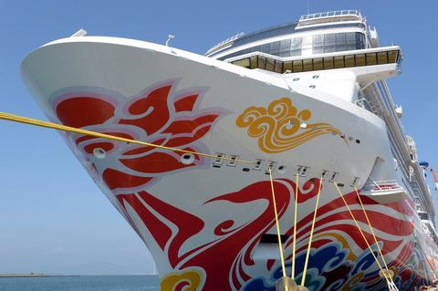
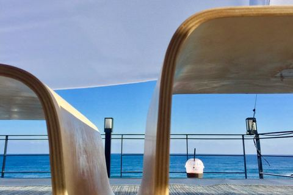

站在关岛杜梦湾街口108分钟拍摄延时，10秒间隔得10秒，只有慢下来才能感受到时间的流动……108分钟里看到穿拖鞋的多穿西服的少、日本韩国人多中国人少、开野马SUV的多骑自行车的少、穿梭巴士多团队巴士少，喜爱旅行的您告诉我这说明了什么？少就…
31 张照片 →偶然看到一组历时两年时间用延时摄影拍摄的美国，云在飞、星在跑、日出日落、风雨交加，一下子就能体会到长宽高之外的第四维度—时间。十一黄金周加上年假，我们去埃及……一个时间被浓缩的国家，我萌生尝试着用延时来记录埃及。…
139 张照片 →又一次准备启程去塞班，两年前这个时间，去看了塞班的海，两年后会有什么变化呢？…
76 张照片 →
诺唯真喜悦号自己的图片已经拍的很好了，但是作为一个首航体验（摄影）师，还是愿意自己一睹为快，有把自己眼中看到的真实的喜悦号记录下来的冲动！ 作为世界三大邮轮公司之一的诺唯真游轮，第一次进入中国就来了一条亚洲最大船，和赞礼量子是同一级别，也足…
176 张照片 →
三元伊始元旦新习俗：飞韩国购物、泡日本温泉、下海岛潜水、上邮轮美食、拿多次签证暴走……乐道旅行恭祝您2017年新年快乐、吉祥如意！17走吧，我们去个好地方！…
347 张照片 →